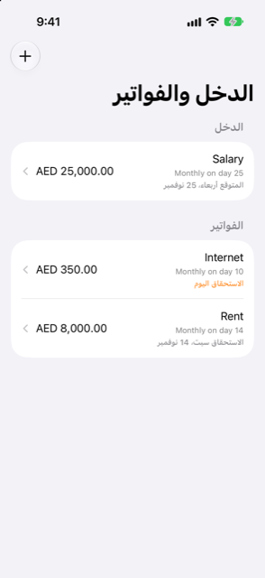

الدليل › التخطيط
الدخل والفواتير التي تتكرر
الراتب والإيجار والاشتراكات: أعدّها مرة واحدة.
الدخل والفواتير المتكررة هي القائمة في الخطة لكل ما يتكرر: راتبك، وإيجارك، واشتراكاتك. أعدّ كلًا منها مرة واحدة، وسيحتسبه التوقع حسب جدوله.

متى تستخدمها
- تتلقى دخلك بإيقاع منتظم وتريده محسوبًا في التوقع.
- لديك فواتير تتكرر: الإيجار، المدرسة، الاشتراكات.
- لاحظت Damla دفعات تتكرر في سجلك وتعرضها عليك.
- سُجّلت دفعة متكررة أو تُخطّيت عن طريق الخطأ وتحتاج إلى التراجع عن ذلك.
خطوة بخطوة
- افتح تبويب الخطة واضغط الدخل والفواتير.
- اضغط إضافة (وإذا لم يُعدّ شيء بعد، تعرض الشاشة أضف واحدًا).
- اختر النوع: فاتورة أو الدخل. عنصر التحكم النوع في أعلى النموذج يفعل ذلك.
- أدخل الاسم والمبلغ والحساب الذي يمر عبره (مدفوع من لفاتورة، ومدفوع إلى للدخل).
- إذا كان المبلغ يتغير، فعّل المبلغ متغير وأدخل أدنى مبلغ وأعلى مبلغ بدل رقم واحد.
- اختر التكرار: كل شهر، أو كل أسبوع، أو كل 2 أسبوع، أو كل 3 أشهر، أو كل 6 أشهر، أو كل سنة، أو مخصص… لأي إيقاع (كل N من الأيام أو الأسابيع أو الأشهر أو السنوات)، أو مرة واحدة.
- إذا كان له نهاية، فعّل يتوقف بعد عدد من الدفعات وحدّد العدد. يصبح حقل التاريخ حينها الدفعة الأولى.
- للدخل، اختر درجة التأكد: ثابت: يصل في موعده، أو متغير: استخدم أدنى مبلغ حديث، أو غير منتظم: يُحتسب عند استلامه فقط.
- اضغط حفظ.
إبقاء القائمة صحيحة
تُرتَّب القائمة بما يستحق أقرب أولًا، تحت قسمي الدخل والفواتير. يعرض كل صف اسمه وإيقاعه وحالته: الاستحقاق اليوم أو الاستحقاق الغد بالبرتقالي عندما تحين فاتورة، أو متأخر بالأحمر عندما يكون موعده قد فات، أو التاريخ التالي. وللدخل تُقرأ الأسطر نفسها متوقع اليوم أو متوقع الغد.
موجود في سجلك
في أعلى القائمة، تعرض Damla الدفعات التي لاحظتها تتكرر في سجلك بمبلغ وإيقاع ثابتين. لكل منها زر إضافة يضعها في توقعك؛ واسحب واحدة بعيدًا واضغط ليست فاتورة إذا لم تكن فاتورة. لا يُضاف شيء من السجل دون ضغطتك.
عندما تستحق فاتورة
- الفاتورة أو الدخل المستحق غدًا أو اليوم أو المتأخر وغير المسجّل بعد يظهر في شاشة اليوم تحت الاستحقاق. يفتح سطر تحت القادم العنصر الذي خلفه إن وُجد: فاتورة أو دخل يفتح صفحتها، وفاتورة بطاقة تفتح ورقة سدادها، وعملية شراء مجدولة تفتح خطتها.
- افتح العنصر لترى موعد استحقاقه التالي، ثم عدّل المبلغ أو التاريخ أو الحساب أو الفئة إذا اختلفت هذه المرة.
- اضغط وضع علامة مدفوع (أو وضع علامة مُستلَم للدخل). تضيف Damla المعاملة، وتضع علامة أن تلك الدفعة تمّت، وتقدّم تاريخ الاستحقاق التالي. وتقول ما سجّلته وتغلق الشاشة.
- فعّل استخدم هذه التفاصيل من الآن فصاعدًا للاحتفاظ بمبلغ أو حساب جديد للمرات القادمة أيضًا.
- اضغط تخطَّ هذه إذا لم تصل هذه المرة: تُوضع علامة أنها تمّت دون تسجيل أي شيء.
- يمكنك التسجيل مبكرًا. إذا لم يكن الموعد التالي مستحقًا لأكثر من أسبوع، تسأل Damla قبل التسجيل («نعم، دفعته مبكرًا» / «نعم، استلمته»)، فلا تسجّل ضغطة ثانية دفعة الشهر القادم عن طريق الخطأ.
- إذا كانت دفعة بهذا المبلغ موجودة أصلًا في دفاترك (من رسالة بنك مثلًا)، تُعامل الفاتورة كمدفوعة ولا يظهر أي تذكير.
من الجيد أن تعرف
- درجة التأكد مهمة لخط التوقع المتحفظ: الدخل الثابت يُحتسب كما قلته، و«المتغير» يستخدم أدنى مبلغ حديث، و«غير المنتظم» لا يُحتسب إلا عندما يُستلم فعليًا. خط التوقع المتحفظ يؤجّل الدخل غير الثابت أو يخفّضه.
- اسحب صفًا واضغط حذف لإزالته؛ واستخدم تعديل في صفحته لتغيير أي شيء فيه.
- تحتفظ صفحة العنصر بقسم سُجّل هنا قصير: الدفعات الأخيرة التي سُجّلت عليه.
- قسط القرض الذي تضع عليه علامة مدفوع هنا يسدّد القرض؛ ولا يُحتسب إنفاقًا.
ذات صلة
هل هناك شيء غير واضح أو ناقص؟ اكتب إلى support@raveniq.ai واذكر الصفحة.